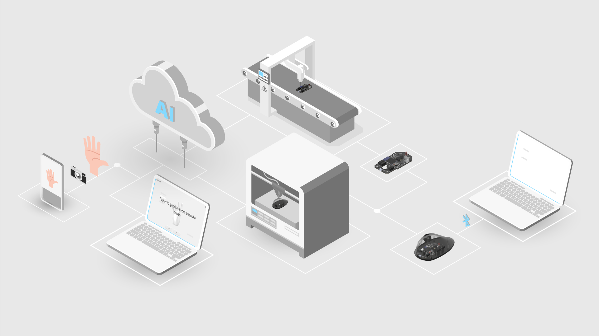
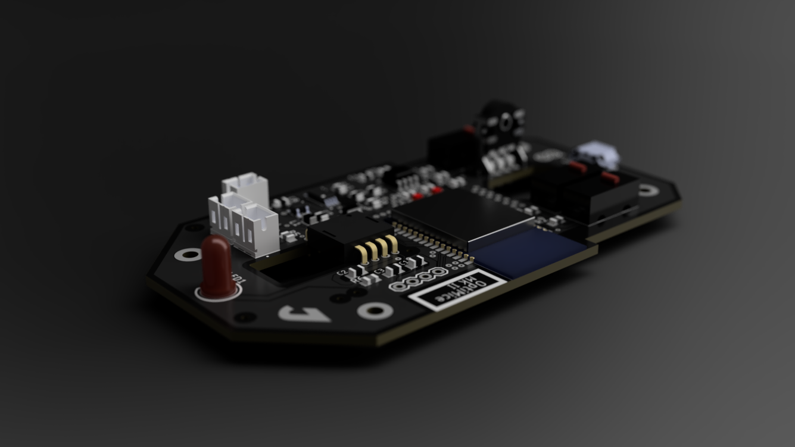

🖱 OptiMice
"Bespoke computer mice powered by AI and 3D printing"
The Problem
"I love my $10 cheapo mouse more than my $100 Logitech."
- just me
Computer mice are designed for the average male's hand since their introduction back in 1983, when Apple introduced them alongside Lisa. A person with a hand devaited from the average will have a very hard time finding the right mouse, not to mention female users.
The fact that I’m ditching a premium "ergonomic" mouse for an unbranded cheaply made mouse that fits, reveals that instead of a tech problem, there's a fundamental design flaw .
As customers, we are so used to using computer mice made in standardized shapes and sizes. Ironically, the mouse, out of all computer peripherals, is the only peripheral that actually is dependent on one’s specific grip and hand size. Even when we shop for clothing, we still have a range of sizes to choose from. Does that mean computer mice have to be one-size-fit-all?
The Solution
A computer mouse that’s optimized just for you, that is design and made from:
- on-demand, decentralized bespoke manufacturing
- modern-day technology
- data-driven and computational frameworks

OptiMice essentially is an automated pipeline that takes customers’ hand data and eventually manufactures a computer mouse out of it.
The Web App

An incoming customer will upload a picture of their dominant hand via the web app. Leveraging the MANO machine learning model, a 3D representation of the customer’s hand will be generated out of the simple RGB image. Subsequently, the 3D mouse model that conforms to the user’s hand size and posture will be generated procedurally.
The PCB
With a wide spectrum of microswitches (tactile or silent in different actuation forces), rotary encoders (tactile or smooth), optical sensors (IR or laser), and connectivity methods (wired or wireless) to choose from, the PCB will be speced just as the customer wanted.


3D Printed Housing

Thanks to the additive nature of 3D printing, a bespoke mouse can be manufactured on-demand, without the restriction of needing and wasting toolings. A customer can config the housing's color, material, or even texture of a mouse that fits one's unique hand effortlessly for ultimate personalization.